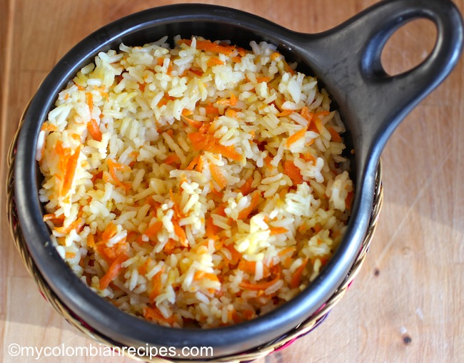

Carrot Rice

Colombian Carrot Rice
Carrot rice is a Colombian dish filled with flavor, warmth and style.
It's a side traditionally served with fish or chicken. Many Colombian's add carrot rice to there soups and incorporate them in salads. It can be used to make a simple side of rice into a flavorful masterpiece. Carrot rice can also be a breakfast side served with eggs and beans. Carrot rice is an easy way to incorporate veggies and appreciate the culure of Colombia. Let's take a look at how to make this amazing recipe.
Ingredients
- Carrots
- Vegetable Stock
- 2 cups of rice
Instructions
- Rinse the rice thoroughly by placing it into a strainer and running cool water over it.
- Place the rice in a medium saucepan; then add the vegetable stock, oil, carrots and salt.
- Bring to a boil and cook for 20 minutes.
- Remove the pot from the stove and let it sit for 10 minutes and serve.